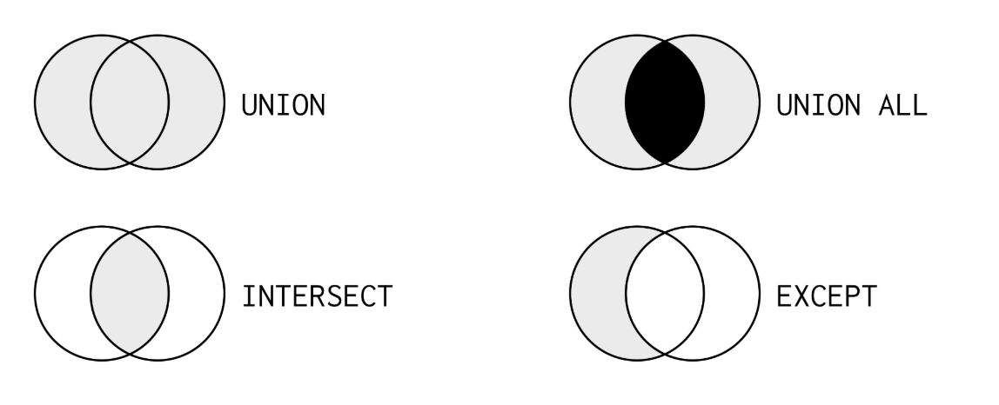
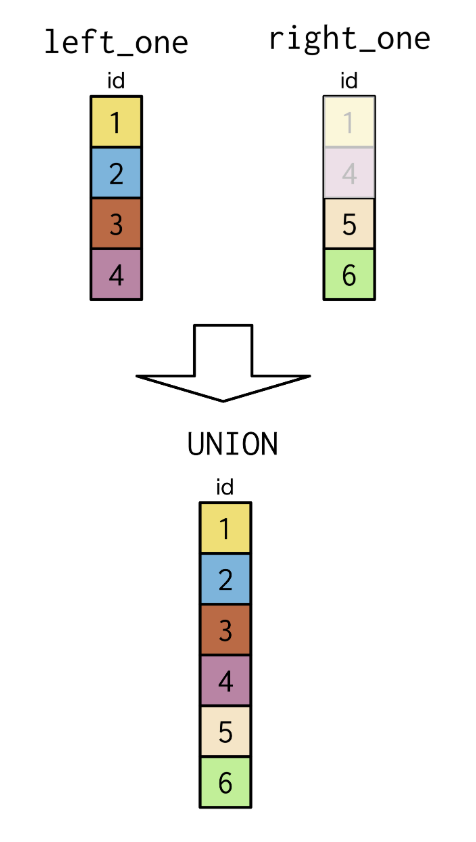
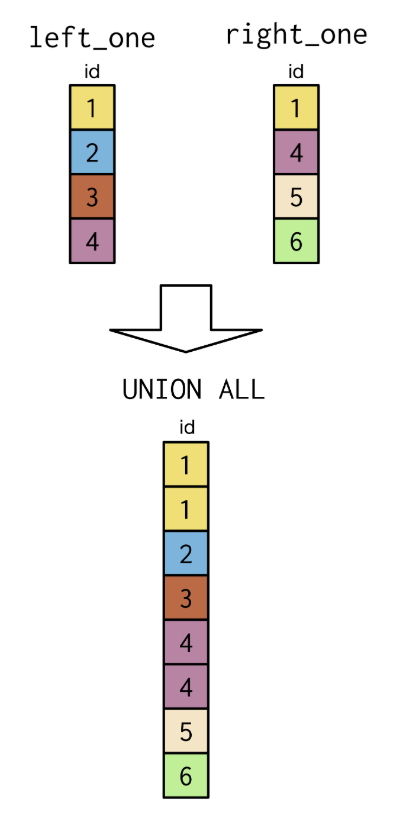
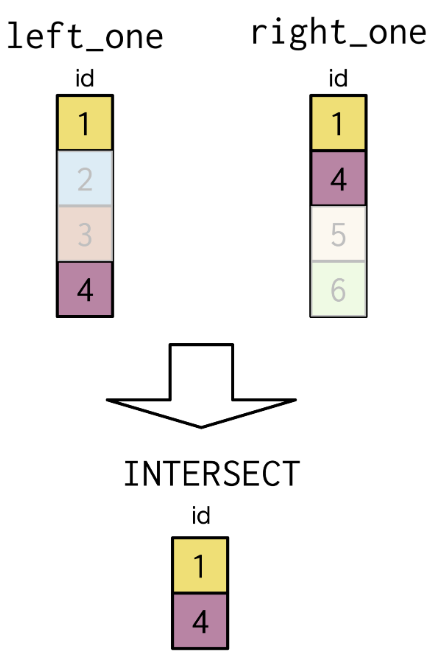
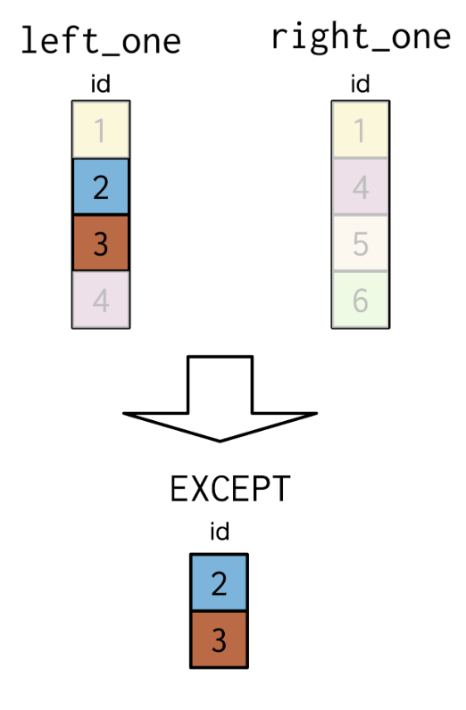
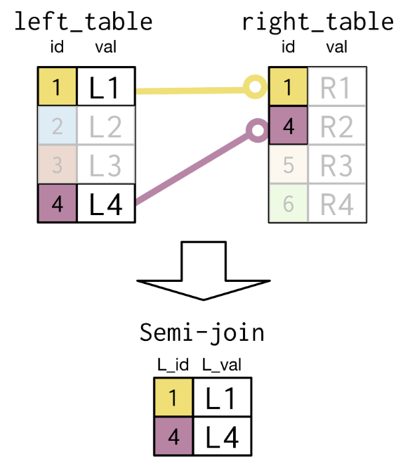
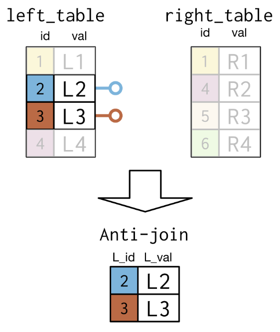

SQL
Some notes and useful resources on Structured Query Language (SQL).
SQL is a language for interacting with data in a relational database.
It's common practice to make SQL keywords uppercase but the query will also run successfully if keywords are in lower case. It's not case sensitive.
It's also common practice (but not essential) to include a semicolon at the end of a query to tell SQL where the end of the query is.
in PostgreSQL, single quotes must be used with the WHERE clause.
/* To print 'I love SQL!': */
SELECT 'I love SQL'
AS result;
/* view the 'title' column in the 'movies' table */
SELECT title
FROM movies;
/* show the number of rows in the countries table */
SELECT COUNT(*)
FROM countries;
/* show the number of unique values of country in the countries table */
SELECT DISTINCT country_name
FROM countries;
SELECT COUNT(surname)
FROM employees;
SELECT COUNT(DISTINCT surname)
FROM employees;
SELECT title
FROM movies
WHERE title = 'Superman';
SELECT title
FROM movies
WHERE release_year > 2015;
SELECT title
FROM movies
WHERE country = 'India';
SELECT (COUNT *)
FROM movies
WHERE language = 'English';
SELECT title
FROM movies
WHERE release_year > 1980
AND release_year < 2015;
(Note: 'AND' must be on a new line, otherwise the code is not valid.)
SELECT *
FROM movies
WHERE language='Spanish'
AND release_year > 2000
AND release_year < 2010;
SELECT title
FROM movies
WHERE (release_year = 1980 OR release_year = 1990)
AND (certification = 'PG' OR certification = 'R');
SELECT title, release_year
FROM movies
WHERE release_year >= 1995
AND release_year < 1998
AND (language='German' OR language='English')
AND gross > 2000000;
SELECT title
FROM movies
WHERE release_year
BETWEEN 1997 AND 2000;
(Note: BETWEEN is inclusive, so the beginning and end values are included in the results)
SELECT title, release_year
FROM movies
WHERE release_year BETWEEN 1995 AND 1999
AND budget > 2000000
AND (language='German' OR language='French');
SELECT title, release_year
FROM movies
WHERE release_year IN (1980, 2010)
AND duration > 90;
SELECT COUNT(*)
FROM employees
WHERE birthdate IS NULL;
SELECT COUNT(*)
FROM employees
WHERE birthdate IS NOT NULL;
SELECT name
FROM clubs
WHERE name LIKE 'Cycling%';
SELECT name
FROM clubs
WHERE name NOT LIKE 'Cycling%';
SELECT name
FROM clubs
WHERE name LIKE 'Cycl_';
SELECT name
FROM clubs
WHERE name LIKE '_ing%';
SELECT AVG(budget)
FROM movies;
SELECT MAX(budget)
FROM movies;
SELECT SUM(budget)
FROM movies;
SELECT MAX(gross)
FROM movies
WHERE release_year BETWEEN 2000 AND 2012;
SELECT (10 / 3);
SELECT AVG(duration)/60.0 AS avg_duration_hours
FROM movies;
Note: SQL assumes that if you divide an integer by an integer, you want to get an integer back. This means that the following will erroneously result in 400.0:
SELECT 45 / 10 * 100.0;
This is because 45 / 10 evaluates to an integer (4), and not a decimal number like we would expect. So when you're dividing make sure at least one of your numbers has a decimal place:
SELECT 45 * 100.0 / 10;
The above now gives the correct answer of 450.0 since the numerator (45 * 100.0) of the division is now a decimal
-- get number of decades between oldest movie and most recent movie
SELECT (MAX(release_year)-MIN(release_year))/10.0 AS number_of_decades
FROM movies;
SELECT title
FROM movies
ORDER BY release_year DESC;
SELECT title
FROM movies
WHERE release_year IN (1990, 2000)
ORDER BY release_year;
SELECT *
FROM movies
WHERE release_year != 1995
ORDER BY duration, title;
SELECT sex, count(*)
FROM members
GROUP BY sex;
SELECT release_year, MAX(budget)
FROM movies
GROUP BY release_year
ORDER BY release_year;
Note: ORDER BY comes after GROUP BY
SELECT release_year
FROM movies
GROUP BY release_year
HAVING COUNT(title) > 5;
SELECT release_year, AVG(budget) AS avg_budget, AVG(gross) AS avg_gross
FROM movies
WHERE release_year > 1980
GROUP BY release_year
HAVING AVG(budget) > 50000000
ORDER BY AVG(gross) DESC;
-- select country, average budget, average gross
SELECT country, AVG(budget) AS avg_budget, AVG(gross) AS avg_gross
-- from the movies table
FROM movies
-- group by country
GROUP BY country
-- where the country has more than 10 titles
HAVING COUNT(title) > 10
-- order by country
ORDER BY country
-- limit to only show 10 results
LIMIT 10;
Joins
SELECT cities.name AS city, countries.name AS country, countries.region
FROM cities
INNER JOIN countries
ON cities.country_code = countries.code;
SELECT c.code AS country_code, c.name, e.year, e.inflation_rate
FROM countries AS c
INNER JOIN economies AS e
ON c.code = e.code;
SELECT c.code, name, region, e.year, fertility_rate, unemployment_rate
FROM countries AS c
INNER JOIN populations AS p
ON c.code = p.country_code
INNER JOIN economies AS e
ON c.code = e.code AND p.Year = e.Year;
If the attribute to join on is the same in both tables, then USING can be used instead:
SELECT c.name AS country, c.continent, l.name AS language, l.official
FROM countries AS c
INNER JOIN languages AS l
USING (code)
SELECT p1.country_code,
p1.size AS size2010,
p2.size AS size2015,
((p2.size - p1.size)/p1.size * 100.0) AS growth_perc
FROM populations AS p1
INNER JOIN populations AS p2
ON p1.country_code = p2.country_code
AND p1.year = p2.year - 5;
SELECT name, continent, code, surface_area,
CASE WHEN surface_area > 2000000 THEN 'large'
WHEN (surface_area BETWEEN 350000 AND 2000000) THEN 'medium'
ELSE 'small' END
AS geosize_group
FROM countries;
SELECT name, continent, code, surface_area,
CASE WHEN surface_area > 2000000
THEN 'large'
WHEN surface_area > 350000
THEN 'medium'
ELSE 'small' END
AS geosize_group
INTO countries_plus
FROM countries;
SELECT c1.name AS city, code, c2.name AS country, region, city_proper_pop
FROM cities AS c1
LEFT JOIN countries AS c2
ON c1.country_code = c2.code
ORDER BY code DESC;
SELECT name AS country, code, region, basic_unit
FROM countries
FULL JOIN currencies
USING (code)
WHERE region = 'North America' OR region IS NULL
ORDER BY region;
SELECT c.name AS city, l.name AS language
FROM cities AS c
CROSS JOIN languages AS l
WHERE c.name LIKE 'Hyder%';
Set Theory Clauses

"Union All" double counts the items that overlap (hence the shading in black).
Union

SELECT *
FROM economies2010
UNION
SELECT *
FROM economies2015
ORDER BY code, year;
-- View all unique country_codes across the cities and currency tables
SELECT country_code
FROM cities
UNION
SELECT code
FROM currencies
ORDER BY country_code;
Union All

-- View country code and year (including duplicates) across economies & populations tables
SELECT code, year
FROM economies
UNION ALL
SELECT country_code, year
FROM populations
ORDER BY code, year;
Intersect

SELECT code, year
FROM economies
INTERSECT
SELECT country_code, year
FROM populations
ORDER BY code, year;
-- View countries that have a city with the same name as the country
SELECT name
FROM countries
INTERSECT
SELECT name
FROM cities;
Except

-- Show cities that are NOT capital cities
SELECT name
FROM cities
EXCEPT
SELECT capital
FROM countries
ORDER BY name;
Sub-Queries

-- view unique list of languages from countries in the Middle East
SELECT DISTINCT name
FROM languages
WHERE code IN
(SELECT code
FROM countries
WHERE region = 'Middle East')
ORDER BY name;
This can also be achieved with an inner join:
SELECT DISTINCT languages.name AS language
FROM languages
INNER JOIN countries
ON languages.code = countries.code
WHERE region = 'Middle East'
ORDER BY language;
A more complicated example, also using set tbeory clauses:
SELECT name
FROM cities AS c1
WHERE country_code IN
(
SELECT e.code
FROM economies AS e
UNION
SELECT c2.code
FROM currencies AS c2
EXCEPT
SELECT p.country_code
FROM populations AS p
);

SELECT code, name
FROM countries
WHERE continent = 'Oceania'
AND code NOT IN
(SELECT code
FROM currencies);
More Sub-Queries In WHERE
SELECT *
FROM populations
WHERE life_expectancy >
1.15*(SELECT AVG(life_expectancy) FROM populations WHERE year = 2015)
AND year = 2015;
SELECT name, country_code, urbanarea_pop
FROM cities
WHERE name IN
(SELECT capital
FROM countries)
ORDER BY urbanarea_pop DESC;
SELECT code, inflation_rate, unemployment_rate
FROM economies
WHERE year = 2015 AND code NOT IN
(SELECT code
FROM countries
WHERE (gov_form = 'Constitutional Monarchy' OR gov_form LIKE '%Republic%'))
ORDER BY inflation_rate;
Sub-Queries In SELECT
The following 2 queries do the same thing...
SELECT countries.name AS country,
(SELECT count(*)
FROM cities
WHERE countries.code = cities.country_code) AS cities_num
FROM countries
ORDER BY cities_num DESC, country ASC
LIMIT 9;
SELECT countries.name AS country, COUNT(*) AS cities_num
FROM cities
INNER JOIN countries
ON countries.code = cities.country_code
GROUP BY country
ORDER BY cities_num DESC, country
LIMIT 9;
Sub-Queries In FROM
SELECT local_name, lang_num
FROM countries,
(SELECT code, COUNT(*) AS lang_num
FROM languages
GROUP BY code) AS subquery
WHERE subquery.code = countries.code
ORDER BY lang_num DESC;
More examples...
SELECT name, continent, inflation_rate
FROM countries
INNER JOIN economies
ON countries.code = economies.code
WHERE year = 2015
AND inflation_rate IN (
SELECT MAX(inflation_rate) AS max_inf
FROM (
SELECT name, continent, inflation_rate
FROM countries
INNER JOIN economies
ON countries.code = economies.code
WHERE year = 2015) AS subquery
GROUP BY continent);
CASE Statements
SELECT
CASE WHEN hometeam_id = 10189 THEN 'FC Schalke 04'
WHEN hometeam_id = 9823 THEN 'FC Bayern Munich'
ELSE 'Other' END AS home_team,
COUNT(id) AS total_matches
FROM matches_germany
GROUP BY home_team;
SELECT
m.date,
t.team_long_name AS opponent,
CASE WHEN m.home_goal > m.away_goal THEN 'Barcelona win!'
WHEN m.home_goal < m.away_goal THEN 'Barcelona loss :('
ELSE 'Tie' END AS outcome
FROM matches_spain AS m
LEFT JOIN teams_spain AS t
ON m.awayteam_id = t.team_api_id
WHERE m.hometeam_id = 8634;